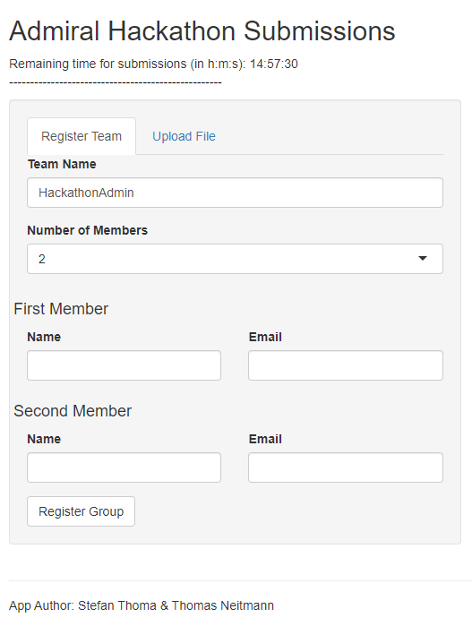

We recently created a shiny application for the admiral hackathon in February 2023. The admiral hackathon was an event designed to make statistical programmers from the pharmaceutical industry more comfortable with the admiral R package which allows users to efficiently transform data from one data standard (SDTM) to another (ADaM).
Hackathon participants formed groups of up to five people and were then tasked to create R-scripts that map the SDTM data to ADaM according to specifics defined in the metadata.
The purpose of the shiny app was threefold:
Allow participants to easily register as a team.
Let participants upload their R-scripts, so that the
admiralteam can see how theadmiralpackage is being used – and how the functions and the documentation could be improved.Run participants R-scripts on the cloud and compare the produced file to a solution file. Let participants autonomously get feedback on their work.
In this blog post I want to highlight some of the thoughts that went into this application. Please keep in mind that this work was done under tight time restraints.
The hackathon application is still online (although data-upload is switched off) and the GitHub repository is publicly available. The application is embedded into this post right after this paragraph. I have also uploaded to GitHub a .zip file of the workspace to which hackathon participants had access via posit cloud. For more context you can watch recordings of the hackathon-meetings.
Permanent Data
The biggest challenge you have to consider for this app is the permanent data storage. Shiny apps run on a server. Although we can write files on this server, whenever the app restarts, the files are lost. Therefore, a persistent data storage solution is required.
Google drive
I decided to leverage Google drive using the googledrive package package. This allowed me to save structured data (the team registry and the submission scores) as well as unstructured data (their R-script files).
To access Google drive using the googledrive package we need to authenticate. This can be done interactively using the command googledrive::drive_auth() which takes you to the Google login page. After login you receive an authentication token requested by R.
For non-interactive authentication this token must be stored locally. In our case where the shiny app must access the token once deployed, the token must be stored on the project level.
I have included the authentication procedure I followed in the R folder in google_init.R. You can find more extensive documentation of the non-interactive authentication.
The initial concept was: Each team gets their own folder including the most recent submission for each task, and a .csv file containing team information. To keep track of the submissions and the respective scores we wrote a .csv file in the mock-hackathon folder, so one folder above the team folders.
Saving the team info as a .csv file worked fine as each team received their own file which – once created – was not touched anymore. As each upload for every team should simply add a row to the submissions.csv file, appending the file would be ideal. This was not possible using the googledrive package package. Instead, for each submission, the submissions file was downloaded, appended, and uploaded again. Unfortunately, this lead to a data loss, as the file was continuously overwritten, especially when two teams would submit simultaneously.
Whenever the submissions.csv file was uploaded, the previous version was sent to the Google drive bin. We ended up with over 3000 submissions.csv files containing a lot of redundant information. I had to write the following chunk to first get the unique file IDs of the 3000 submissions.csv files, create an empty submissions data-frame, and then download each file and add its information to the submisisons data-frame. To keep the data-frame as light as possible, after each append I deleted all duplicate submissions.
# get all task_info.csv ID's
# each row identifies one file in the trash
task_info_master <- drive_find(
pattern = "task_info.csv",
trashed = TRUE
)# set up empty df to store all submissions
origin <- tibble(
score = numeric(),
task = character(),
team = character(),
email = character(),
time = character()
)
# downloads, reads, and returns one csv file given a file id
get_file <- function(row) {
tf <- tempfile()
row %>%
as_id() %>%
drive_download(path = tf)
new <- read_csv(tf) %>%
select(score, task, team) %>%
distinct()
}# quick and dirty for loop to subsequently download each file, extract information
# merge with previous information and squash it (using distinct()).
for (i in 1:nrow(task_info_master)) {
origin <- rbind(origin, get_file(row = task_info_master[i, ])) %>%
distinct()
# save progress in a separate file after every 100 downloaded and merged sheets
if (i %% 100 == 0) {
print(i)
write_csv(origin, paste("prog_data/task_info_prog_", i, ".csv", sep = ""))
# update on progress
message(i / nrow(task_info_master) * 100)
}
}When doing such a time-intensive task, make sure to try it first with only a couple of files to see whether any errors are produced. I am not quite sure how long this took but when I returned from my lunch break everything had finished.
If you want to stay in the Google framework, I recommend using the googlesheets4 package for structured data. googlesheets4 allows appending new information to an already existing sheet without the need to download the file first. As both packages follow the same style, going from one to the other is really simple. googlesheets4 requires authentication as well. However, you can reuse the cached token from the googledrive package authentication by setting gs4_auth(token = drive_token()).
Security Concerns
Connecting a public shiny app to your Google account introduces a security vulnerability in general. Especially so because we implemented the upload of files to Google drive. And even more problematic: We run a user generated script and display some of its output. A malicious party might be able to extract the authentication token of our Google account or could upload malware to the drive.
To reduce the risk, I simply created an un-associated Google account to host the drive. There are certainly better options available, but this seemed a reasonable solution achieved with very little effort.
Register Team
We wanted to allow users to sign up as teams using the shiny app. The app provides a simple interface where users could input a team name and the number of members. This in turn would open two fields for each user to input their name and email address.
We do simple checks to make sure at least one valid email address is supplied, and that the group name is acceptable. The group name cannot be empty, already taken, or contain vulgar words.
The team registration itself was adding the team information to the Google sheets file event_info into the sheet teams and to create a team folder in which to store the uploaded R files.
The checks and registration is implemented in the register_team() function stored in interact_with_google.R.

The challenge here was to adapt the number of input fields depending on the number of team members. This means that the team name and email interface must be rendered: First, we check how many team members are part of the group, this is stored in the input$n_members input variable. Then we create a tagList with as many elements as team members. Each element contains two columns, one for the email, one for the member name. This tagList is then returned and displayed to the user.
# render email input UI of the register tab
output$name_email <- shiny::renderUI({
# create field names
N <- input$n_members
NAME <- sapply(1:N, function(i) {
paste0("name", i)
})
EMAIL <- sapply(1:N, function(i) {
paste0("email", i)
})
output <- tagList()
firstsecondthird <- c("First", "Second", "Third", "Fourth", "Fifth")
for (i in 1:N) {
output[[i]] <- tagList()
output[[i]] <- fluidRow(
shiny::h4(paste(firstsecondthird[i], " Member")),
column(6,
textInput(NAME[i], "Name"),
value = " " # displayed default value
),
column(6,
textInput(EMAIL[i], "Email"),
value = " "
)
)
}
output
})The team information is then uploaded to Google drive. Because some teams have more members than others, we have to create the respective data-frame with the number of team members in mind.
The following chunk creates the registration data. Noteworthy here the creation of the NAME and EMAIL variables which depend on the number of members in this team. Further, the user input of these fields is extracted via input[[paste0(NAME[i])]] within a for-loop.
We also make the data-creation dependent on the press of the Register Group button and cache some variables.
## registration
registrationData <-
reactive({
N <- input$n_members
NAME <- sapply(1:N, function(i) {
paste0("name", i)
})
EMAIL <- sapply(1:N, function(i) {
paste0("email", i)
})
names <- character(0)
emails <- character(0)
for (i in 1:N) {
names[i] <- input[[paste0(NAME[i])]]
emails[i] <- input[[paste0(EMAIL[i])]]
}
# create df
dplyr::tibble(
team_name = input$team_name,
n_members = N,
member_name = names,
member_email = emails
)
}) %>%
bindCache(input$team_name, input$n_members, input$name1, input$email1) %>%
bindEvent(input$register) # wait for button pressUpload & Source Script
To upload a script, participants had to select their team first. The input options were based on the existing folders on the Google-drive in the mock_hackathon folder. To upload a particular script participants had to also select the task to be solved. The uploaded script is then uploaded to the team folder following a standardised script naming convention.
There are different aspects to be aware of when sourcing scripts on a shiny server. For example, you have to anticipate the packages users will include in their uploaded scripts, as their scripts will load but not install packages. Further, you should keep the global environment of your shiny app separate from the environment in which the script is sourced. This is possible by supplying an environment to the source() function, e.g: source(path_to_script, local = new.env())
Another thing we had to consider was to replicate the exact folder-structure on the shiny server that participants were working with when creating the scripts, as they were required to source some scripts and to save their file into a specific folder. This was relatively straight forward as we provided participants with a folder structure in the posit cloud instance they were using. They had access to the sdtm folder in which the data was stored, and the adam folder into which they saved their solutions. The structure also included a folder with metadata which was also available on the shiny server.
For some tasks, participants required some ADaM-datasets stored in the adam folder, essentially the output from previous tasks. This was achieved by first creating a list mapping tasks to the required ADaM datasets:
depends_list <- list(
"ADADAS" = c("ADSL"),
"ADAE" = c("ADSL"),
"ADLBC" = c("ADSL"),
"ADLBH" = c("ADSL"),
"ADLBHY" = c("ADSL"),
"ADSL" = NULL,
"ADTTE" = c("ADSL", "ADAE"),
"ADVS" = c("ADSL")
)This list is sourced from the R/parameters.R file when initiating the application. We then call the get_depends() function sourced from R/get_depends.R which copies the required files from the key folder (where our solutions to the tasks were stored) to the adam folder. After sourcing the uploaded script the content in the adam folder is deleted.
Compare to Solution File
We want to compare the file created by participants with our solution (key) file stored in the key folder. The diffdf::diffdf() function allows for easy comparison of two data-frames and directly provides extensive feedback for the user:
library(dplyr)
df1 <- tibble(
numbers = 1:10,
letters = LETTERS[1:10]
)
df2 <- tibble(
numbers = 1:10,
letters = letters[1:10]
)
diffdf::diffdf(df1, df2)Warning in diffdf::diffdf(df1, df2):
Not all Values Compared EqualDifferences found between the objects!
A summary is given below.
Not all Values Compared Equal
All rows are shown in table below
=============================
Variable No of Differences
-----------------------------
letters 10
-----------------------------
All rows are shown in table below
========================================
VARIABLE ..ROWNUMBER.. BASE COMPARE
----------------------------------------
letters 1 A a
letters 2 B b
letters 3 C c
letters 4 D d
letters 5 E e
letters 6 F f
letters 7 G g
letters 8 H h
letters 9 I i
letters 10 J j
----------------------------------------Score
To compare submissions between participants we implemented a simple scoring function (score_f()) based on the table comparison by diffdf(). The function can be found in the compare_dfs.R file:
score_f <- function(df_user, df_key, keys) {
score <- 10
diff <- diffdf::diffdf(df_user, df_key, keys = keys)
if (!diffdf::diffdf_has_issues(diff)) {
return(score)
}
# check if there are any differences if the comparison is not strict:
if (!diffdf::diffdf_has_issues(diffdf::diffdf(df_user,
df_key,
keys = keys,
strict_numeric = FALSE,
strict_factor = FALSE
))) {
# if differences are not strict, return score - 1
return(score - 1)
}
return(round(min(max(score - length(diff) / 3, 1), 9), 2))
}Every comparison starts with a score of 10. We then subtract the length of the comparison object divided by a factor of 3. The length of the comparison object is a simplified way to represent the difference between the two data-frames by one value. Finally, the score is bounded by 1 using max(score, 1).
The score is not a perfect capture of the quality of the script uploaded but: 1. helped participants get an idea of how close their data-frame is to the solution file 2. allowed us to raffle prizes based on the merit of submitted r-scripts
Reactiveness
Some of the app functions can take quite some time to execute, e.g. running the uploaded script. Other tasks, e.g. registering a team, do not intrinsically generate user facing outputs. This would make the app using really frustrating, as users would not know whether the app is correctly working or whether it froze.
We implemented two small features that made the app more responsive. One is simple loading icons that integrate into the user interface and show that output is being computed – that something is working. The other is a pop up window which communicates whether team registration was successful, and if not, why not.
We further aimed to forward errors generated by the uploaded scripts to the user interface, but errors generated by the application itself should be concealed.
Conclusion
Although the application was continuously improved during the hackathon it proved to be a useful resource for participants from day one as it allowed groups to set their own pace. It further allowed admiral developers to gain insights on package usage of a relatively large sample of potential end users. From our perspective, the application provided a great added value to the hackathon and eased the workload of guiding the participants through all the tasks.
Last updated
2024-01-04 14:09:38.214715
Details
Reuse
Citation
@online{thoma2023,
author = {Thoma, Stefan},
title = {Hackathon {Feedback} {Application}},
date = {2023-06-27},
url = {https://pharmaverse.github.io/blog/posts/2023-06-27__hackathon_app},
langid = {en}
}